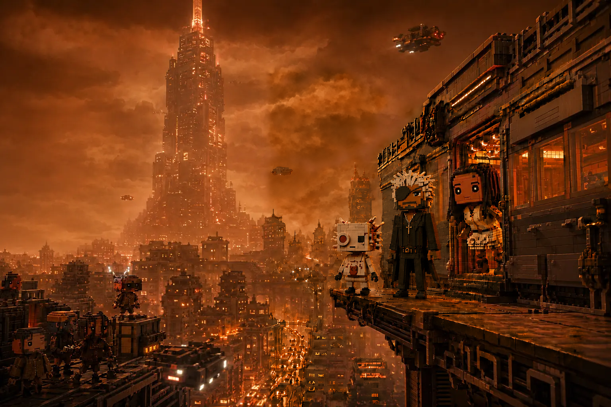

FUTURE SIMPLE · CYBERVOXEL RPG
THE LAST TRAIN HOME
Jax's train has broken down. Cross the dangerous megacity and reach his home tower before lockdown.
+5 CORRECT4 ACCESS SHARDS3 CHANCES
JavaScript is required for branching choices and scoring.